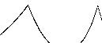
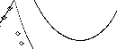

Dimensions of Fractal Trees
We consider binary fractal trees, with branch scaling chosen so some points
of the left and right branches intersect, but only at the branch tips. The animations show how
the geometry of the tree, and of the branch tips, changes as the branching angle increases.
Details can be found in Mandelbrot and Frame. This is an
elaboration of the ideas in Chapter 16 of FGN.
| A. Definitions of binary tree, branch tip, and self-contact. |
 |
| B. Self-contacting trees: how the scaling factor depends on
the branching angle. |
 |
| C. Dimensions of canopies and other fractals: computing the
dimension of the branch tips, canopy, and shortest path of a tree. Discontinuous changes in
dimension are seen at some angles. |
 |
| D. Animations of how the tree and the branch tips of self-
contacting trees change as the branching angle increases from 0 to 180. |
 |